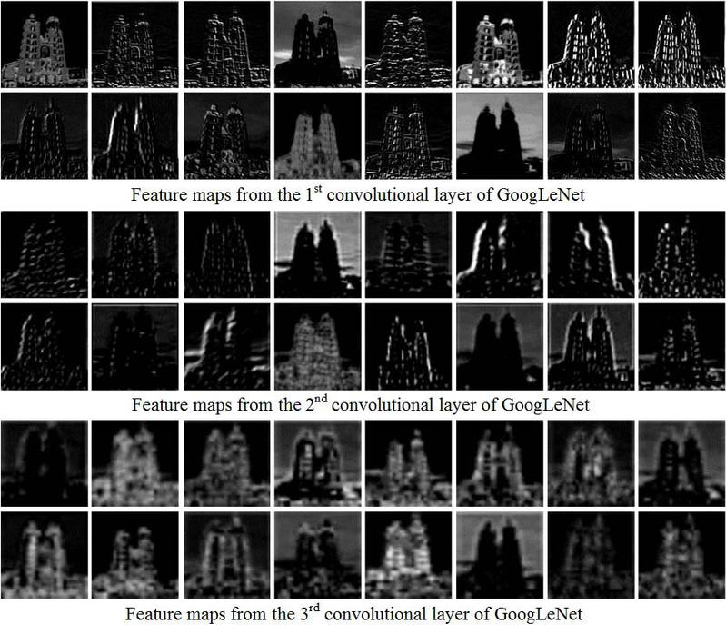
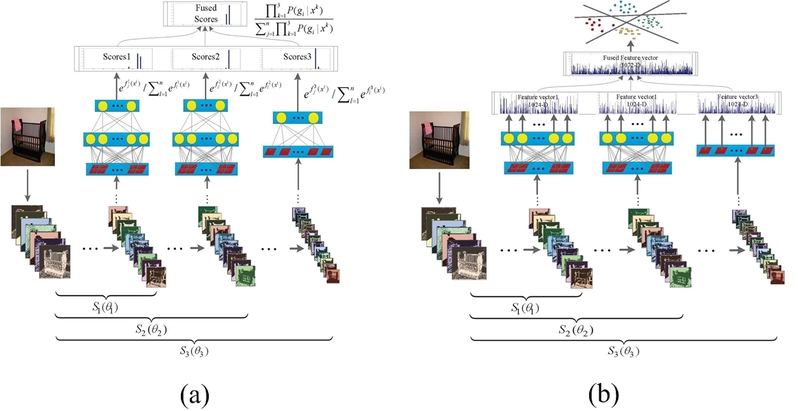
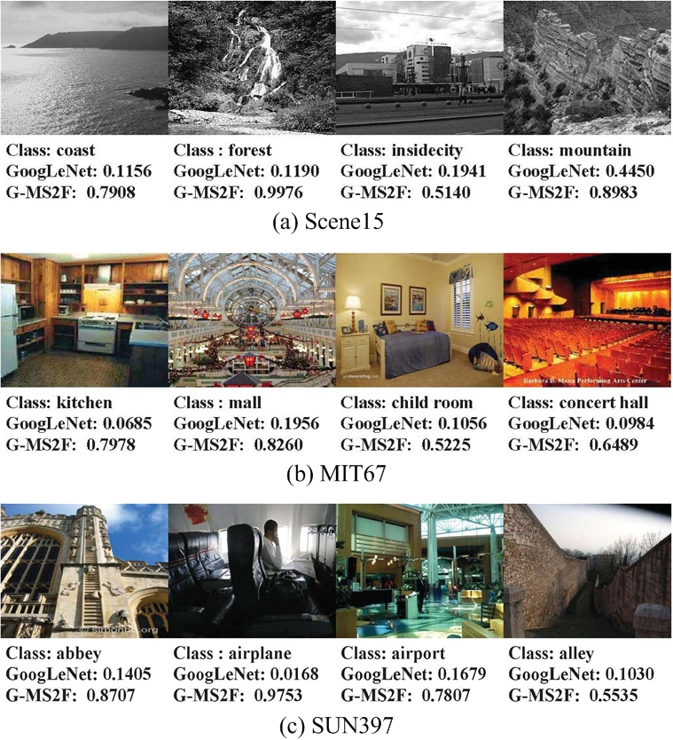
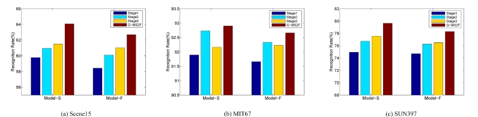

G-MS2F: GoogLeNet Based Multi-Stage Feature Fusion of Deep CNN for Scene Recognition
Pengjie Tanga, Hanli Wanga, Sam Kwongb
aDepartment of Computer Science and Technology, Tongji University, Shanghai, P. R. China
bDepartment of Computer Science, City University of Hong Kong, Hong Kong, P. R. China
Abstract:
Scene recognition plays an important role in the task of visual information retrieval, segmentation and image/video understanding. Traditional approaches for scene recognition usually utilize handcrafted features and have the drawbacks of poor representation ability, which can be improved by employing deep convolutional neural network (CNN) features that contain more semantic and structure information and thus possess more discriminative ability via multiple linear and non-linear transformations. However, an amount of detailed information may be lost when only the final output features which have gone through a certain number of transformations are applied to scene recognition. The features which are generated from the intermediate layers are not fully utilized. In this work, the GoogLeNet model is employed and divided into three parts of layers from bottom to top. The output features from each of the three parts are applied for scene recognition, which leads to the proposed GoogLeNet based multi-stage feature fusion (G-MS2F). What's more, the product rule is used to generate the final decision for scene recognition from the three outputs corresponding to the three parts of the proposed model. The experimental results demonstrate that the proposed model is superior to a number of state-of-the-art CNN models for scene recognition, and obtains the recognition accuracy of 92.90%, 79.63% and 64.06% on the benchmark scene recognition datasets Scene15, MIT67 and SUN397, respectively.
Motivation:
It is well known that the features extracted from a lower CNN layer place particular emphases on the part and detail information of scene images due to the shallow depth. Along with the increase of layer depth, more abstract features will be generated as more transformations are performed to describe the image structure, shape and sketch of an object in a more complete manner. Therefore, deep layer features are favorable to the visual task of object classification and recognition. However, scene images usually contain more complex texture, rich color and complicated spatial relationship than object images in which one or more objects are dominated. Meanwhile, detailed information becomes gradually lost in deeper CNN layers, and consequently most regions in a scene image possess no longer discriminative property. An example of the feature maps extracted from different layers in GoogLeNet is shown in Fig. 1 to further demonstrate the above discussion.

Fig. 1 An example of feature maps extracted from different layers in GoogLeNet
Since the features from different CNN layers exhibit different visual characteristics, we consider to combine their inherent representation abilities by the proposed fusion method to further improve scene recognition performance. On the other hand, the idea of the proposed method is similar to that of multi-view learning which utilizes the features from different views as multi-view features may be complementary to each other. In this sense, the proposed strategy of fusing features from multiple stages in a CNN model belongs to the multi-view learning family, but the way of feature generation of the proposed method is different from traditional multi-view learning methods in which the processes of feature extraction from different views are usually independent of each other.
Proposed G-MS2F Model and Performances:
In GoogLeNet, there are 9 Inception modules employed to construct the architecture. The Inception module consists of a few of convolutional kernels with small sizes (such as 1*1, 3*3 and 5*5), which are conducive to limit the scale of parameters and model complexity. In order to overcome the problems of gradient vanishing and over-fitting, these 9 Inception modules are divided into 3 groups, and three objective functions are added on every 3 Inception modules. The proposed model is also divided into three parts according to the location of the auxiliary cost functions to utilize multi-stage features. In order to fuse the information of these three stages (including S1, S2 and S3), two fusion strategies are designed and evaluated in this work as visualized in Fig. 2, including (1) Model-S which fuses classification scores as shown in Fig. 2(a) and (2) Model-F which synthesizes features as illustrated in Fig. 2(b).

Fig. 2 Proposed G-MS2F model ((a) Model-S: fusion with scores), (b) Model-F: fusion with features)
As far as Model-S is concerned, the auxiliary classifiers are used directly by fusing their output classification scores. In this model, the output features generated from each stage's top layer are not fused, instead, they are fed as inputs to their corresponding Softmax classifiers independently as usual and the prediction probabilities (or scores) are computed by the Softmax function.
Regarding the proposed Model-F as shown in Fig. 2(b), it adopts a traditional early fusion strategy to fuse the features generated from the three stages to form a final new feature representation. Specifically, each of these three parts will produce a feature vector with 1024 dimensions, then these three feature vectors are linearly concatenated to form a 3072-dimension feature vector. Then, the combined feature vector is fed to a linear support vector machine (SVM) classifier to predict the class label.
Several examples are selected in Fig. 3 to show the comparison of prediction scores (or probabilities) between the proposed G-MS2F with Model-S and the GoogLeNet model (which only employs the features of "Stage 3"). From the comparison, it can be clearly observed that the proposed method is able to greatly increase the prediction score of the true class category as compared with GoogLeNet while the example images cannot be predicted correctly if only the S3 stage feature is used by GoogLeNet. For instance, regarding the 1st image in Fig. 3(b), the score of GoogLeNet is 0.0685 and the predicted label is "pantry", however, the ground truth should be "kitchen"; if all the stages' scores are fused by our G-MS2F, we can get the score of 0.7978, and the correct label can be obtained.

Fig. 3 Examples of prediction score comparison between the proposed G-MS2F with Model-S and GoogLeNet
As shown in Fig. 4, the performances with a single stage's features (i.e., S1, S2 and S3) are shown to reveal the advantage of the proposed G-MS2F model which fuses the features of these three stages together.

Fig. 4 Comparison of Model-S and Model-F of the proposed G-MS2F
Implementation:
In order to evaluate the proposed G-MS2F model, the Place205 dataset is employed to initialize the model parameters. We use the pre-trained models optimized on Place205 to fine tune the parameters on other benchmark scene recognition datasets. In this work, the benchmark scene recognition datasets including Scene15, MIT67 and SUN397 are utilized.
In this work, one of the most popular toolkits Caffe is employed to realize the proposed model. The batch_size is set as 20, and the initial learning rate is 0.001 which will be decreased after each iteration according to the "poly" method. Furthermore, we use a momentum to avoid local optimum and set it as 0.9, meanwhile, the weight decay and Dropout ratio are configured as 0.0005 and 0.5, respectively, to prevent the model from over-fitting. Since Scene15 and MIT67 are small-scale datasets, we fine tune the model 20K iterations for these two datasets. Regarding the large-scale SUN397 dataset, the number of training iterations is set to 70K. The traditional data augmentation technique is employed by utilizing the left top corner, left bottom corner, right top corner, right bottom corner and center patches as well as their flipping versions, all of which are clipped as the size of 224*224. During test, the mean value of all the patches is used as the final image score in the proposed Model-S. As far as Model-F is concerned, the linear SVM toolbox LIBLINEAR is employed with the default parameters utilized but setting the parameter of bias(b) as 1 for training.
Source Code:
G-MS2F-1.0: Original illustration: image placeholderG-MS2F-1.0.tar.gz
Citation:
Please cite the following paper when using our proposed G-MS2F.
Pengjie Tang, Hanli Wang, and Sam Kwong, G-MS2F: GoogLeNet Based Multi-Stage Feature Fusion of Deep CNN for Scene Recognition, Neurocomputing, Vol. 225, pp. 188-197, Feb. 2017, DOI: 10.1016/j.neucom.2016.11.023.
Erratum:
In the paper (Pengjie Tang, Hanli Wang, and Sam Kwong, G-MS2F: GoogLeNet Based Multi-Stage Feature Fusion of Deep CNN for Scene Recognition, Neurocomputing, vol. 225, pp. 188-197, Feb. 2017, DOI: 10.1016/j.neucom.2016.11.023), the information of reference [13] in the published version is incorrect. The correct reference information is:
[13] S. Lazebnik, C. Schmid, and J. Ponce, Beyond bags of features: Spatial pyramid matching for recognizing natural scene categories, in: IEEE Conference on Computer Vision and Pattern Recognition, IEEE, Boston, MA, USA, 2006, pp. 2169-2178.